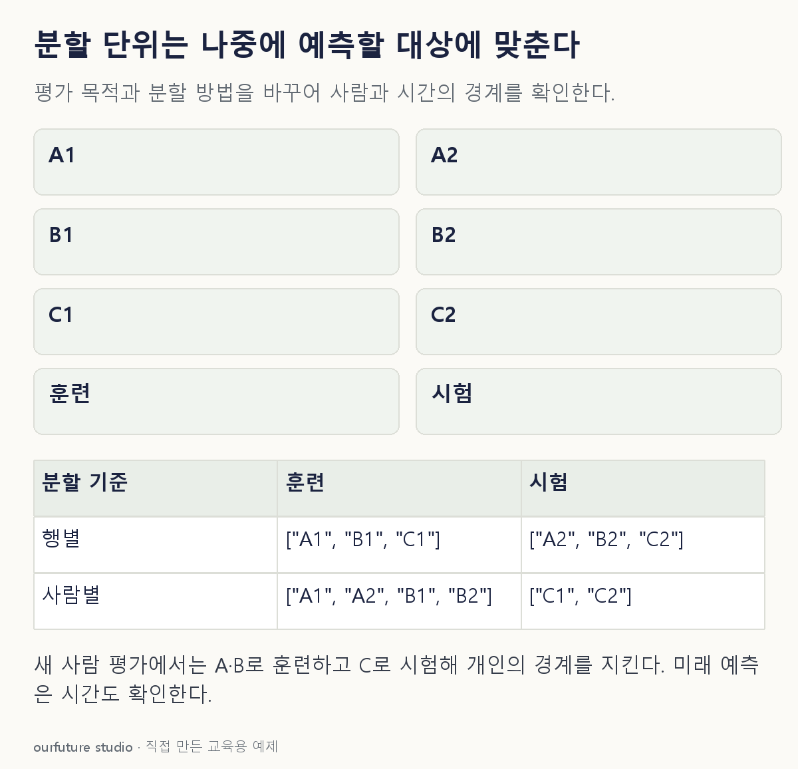

조건을 바꾸며 확인하기
사람과 시간 제약이 동시에 필요하면 둘 다 확인한다. 이 체험은 분할 조건만 비교하고 성능을 측정하지 않는다.
기본 예제와 비교하기
아래 그림과 표는 글의 기본 조건입니다. 입력을 바꾼 결과는 계산 칸에서 확인하세요.

같은 문제를 직접 골라 보기
A·B·C 각각 두 기록이 있다. 목표는 훈련 때 없던 새 사람을 예측하는 것이다.
조건을 더 바꾸면?
목표를 같은 설비의 다음 달 예측으로 바꾸었다. 1~2월과 3월 자료를 어떻게 나누는 것이 사용 순서에 맞을까?
변형 풀이 확인
1~2월로 훈련하고 이후 3월로 평가한다.
미래 예측에서는 과거 정보로 이후 시점을 예측하는 시간 순서를 유지해야 한다.
나눌 단위는 행이 아니라 평가하려는 사람과 시간이다.